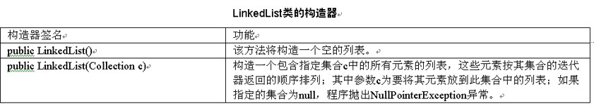
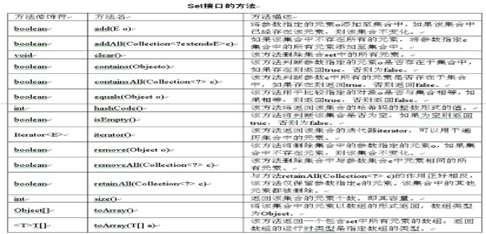
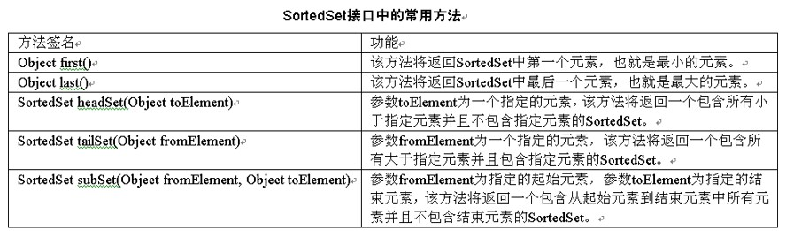
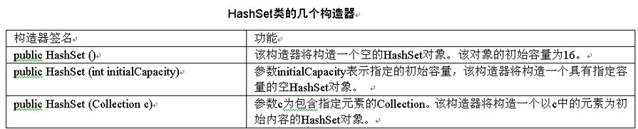
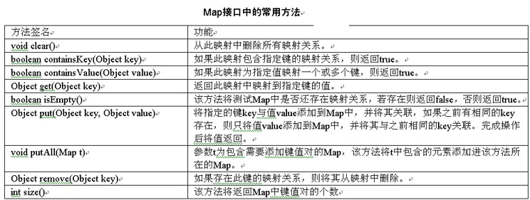
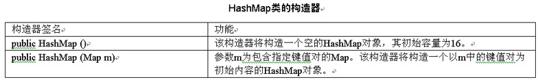

在日常生活中，放衣服就是一门学问，是把衬衫和裤子等衣服都放在一个盒子中呢，还是每一件衣服放在一个盒子中呢，同学们都知道这两种做法都是不好的，通常都是将一类衣服放在一起。同样，在Java中也提供了这样的功能，那就是集合框架。在前面已经学习了数组，集合框架也是和数组一样来保存一组数据。集合框架主要包括列表、集合和映射。通过本章的学习，同学们应该完成如下几个目标。
- 了解什么是集合框架和集合框架包括哪些形式。
- 掌握什么是列表和列表中包括哪些类和接口。
- 掌握什么是集合和集合中包括哪些类和接口。
- 掌握什么是映射和映射中包括哪些类和接口。
19.1 集合框架总论
集合是某一类对象的通称呼，这类对象代表以某种方式组合到一起的一组对象；它是将多个元素组合为一个单元的对象，用于存储，检索，操纵和传递数据。而对象的集合时，指的是对象引用的集合而不是对象的集合，在Java集合中只存储引用，对象在集合之外。集合框架提供用于管理对象集合的接口和类，它包括接口，实现和算法。
19.1.1 什么是集合框架
集合框架是Java提供的一些可以定义一个对象，该对象由其他的对象组成（如常见的向量（Vector）类）。集合框架是一个统一的可以代表及操作集合，并能对这些集合独立的进行操作的一些结构。集合框架的主要优点在于提高了编码效率、性能和复用性。
Java集合框架提供了有效的数据结构及算法，因此程序员不需要自己去编写实现这些功能。Java集合框架提供了高性能的数据结构及算法的实现。因为对各个接口的实现是可以互换的，因此程序很容易可以换接口。提高了Z软件的复用性：软件可以提供标准的集合框架的接口对其进行操作。
Java集合框架主要由一组用来操作对象的接口组成。不同接口描述一组不同数据类型。在这些接口中Collection接口是层次结构中的根接口。在Collection接口中具有开发中经常用使用到的set接口、list接口和map接口。
19.1.2 Collection接口
在上一小节中已经知道，Collection接口是集合继承树中最顶层的接口，该接口声明了集合中常用到的一些通用方法，在表中给出了这些方法。

19.2 列表
List列表作为集合中的一种，其主要特点在于其中的元素保持一定的顺序，并且元素是可以重复的。在本小节将具体讲解List的使用及其实现类（如ArrayList、LinkedList）的使用。List接口继承自Collection接口，代表列表的功能（角色），其中的元素可以按索引的顺序访问，所以也可以称之为有索引的Collection。实现该接口的类均属于Ordered类型，具有列表的功能，其元素顺序均是按添加（索引）的先后进行排列的。
19.2.1 List列表接口
除了继承了Collection声明的方法外，List接口在iterator、add、remove、equals和hashCode方法的基础上加了一些其他约定，超过了Collection接口中指定的约定。同时，List比Collection多了10个方法，这些方法可以分为访问方法、迭代器方法、搜索方法和插入、删除方法。
List接口声明了3种对列表元素进行定位（索引）访问方法：
- Object get(int index)：参数index表示将要需要得到元素的索引。该方法将返回此列表中指定index位置上的元素。
- List subList（int fromIndex, int toIndex）：参数fromIndex为指定的起始索引，参数toIndex为指定的结束索引，该方法将返回一个新的列表，这个新的列表将包含原来列表中从指定的起始索引到指定的结束索引并且不包含结束索引的元素。
- Object[] toArray()：该方法将类表转换成一个Object类型的对象数组，该数组用元素的顺序与列表中元素的顺序相同，并将该数组返回。
List接口声明了特殊的迭代器，称为ListIterator，除了允许Iterator接口提供的正常操作外，该迭代器还允许元素插入和替换，以及双向访问。还提供了一个方法来获取从列表中指定位置开始的列表迭代器。List接口提供了对ListIterator的获取的两种方法，分别是listIterator方法和listIterator(int index)方法。
List接口声明了两种搜索指定对象的方法。从性能的观点来看，应该小心使用这些方法。在很多实现中，这些方法将执行高开销的线性搜索。List接口对其声明如下：
- int indexOf（Object o）：参数o为指定查找的元素，该方法将遍历整个列表查找指定元素o，若列表中存在，则返回第一个找到的元素的索引，若列表中不存在，则返回负数。
- int lastIndexOf（Object o）：参数o为指定查找的元素，该方法将遍历整个列表查找指定元素o，若列表中存在，则返回最后一个找到的元素的索引，若列表中不存在，则返回负数。
List接口声明了两种在列表的任意位置高效插入和删除元素的方法。
- Object set（int index,Object element）：参数index表示需要替换元素的索引。参数o表示将要替换为的元素。该方法操作成功后将返回替换掉的元素。
- Object remove（int index）：参数index为将要移除元素的索引。返回从列表中移除的元素。该方法操作后所有后续元素均向前移动，即列表中间不能有空位。
- boolean remove（Object o）方法：参数o为指定的需要移除的元素。若列表包含一个或多个与指定o相同的元素，则移除该元素，并返回 true，否则返回false。
- boolean removeAll（Collection c）方法：参数c为包含指定需要移除元素的Collection，该方法将列表中有的并且c中有的元素从set中移除，若有元素被移除set则返回true，否则返回false。
- boolean retainAll（Collection c）方法：参数c为包含指定需要保留元素的Collection，该方法将列表中有的并且c中没有的元素从set中移除，若有元素被移除set则返回true，否则返回false。
java.util.List的几种实现中，有三种最为常用的实现类，这三个类分别是Vector类、ArrayList类和LinkedList类。接下来将逐个介绍。
19.2.2 Vector类
Vector类也称为向量，从Java一诞生就有，后来被作为集合框架的一部分，其性能特点与ArrayList基本上是相同的。不同之处是该类的功能方法是同步的，同一时刻只能有一个线程访问，没有特殊需要，现在一般都使用ArrayList，ArrayList会在下一小节中讲解。

Vector提供了用于增加元素的方法，方法如下所述。
- public void addElement（Object obj）方法：该方法是将指定的组件添加到该向量的末尾，并将其大小增加1。如果向量的大小比容量大，则增大其容量。
- public void addElement（int index,Object obj）方法：该方法在该向量的指定位置index插入指定的元素obj。并将当前位于该位置的元素及所有后续元素右移（即将元素索引加1）。如果索引超出范围（即index < 0 || index > size()），则程序抛出ArrayIndexOutOfBoundsException异常。
- public void insertElementAt（Object obj,int index）方法：该方法将指定对象作为此向量中的组件插入到指定的index处。
19.2.3 ArrayList类
本小节主要向同学们介绍ArrayList类，其是List接口最常用的实现之一，可以向其中添加包括null值在内的所有对象引用型的元素，甚至该类对象引用自己也可以作为其中的元素，这样便可以方便的搭建一个树状结构的集合。
ArrayList有三种构造方法，方法如下所示：
- public ArrayList()方法：该构造器将构造一个空的ArrayList对象。该对象的初始容量为10。
- public ArrayList(int initialCapacity)方法：参数initialCapacity表示指定的初始容量，该构造器将构造一个具有指定容量的空ArrayList对象。
- public ArrayList(Collection c)方法：参数c为包含指定元素的Collection。该构造器将构造一个以c中的元素为初始内容的ArrayList对象。
ArrayList类和Vector类一样，同样也具有很多的方法，这里不可能为每一种方法都给出程序
- public boolean add(Object o)该方法将指定的元素o追加到此列表的末尾
- public void add(int index,Object o)该方法将指定的元素o插入此列表中的指定index索引位置
- public boolean addAll(Collection c)该方法将对象c中的所有元素追加到此列表的末尾
- public boolean addAll(int index,Collection c)该方法将参数c中的所有元素从指定的index索引位置开始插入到此列表中
- public void clear()该方法删除列表对象中的所有元素
- public Object clone()该方法返回此ArrayList对象的复制对象，返回为Object对象
- public boolean contains(Object elem)该方法用于判断此列表中是否包含指定的元素elem，如果包含则返回true
- public void ensureCapacity (int minCapacity)该方法用于增加此ArrayList对象的容量，以确保它至少能够容纳最小容量参数所指定的元素数
- public E get(int index)该方法返回此列表对象中指定索引index位置上的元素
- public int indexOf(Object elem)该方法将返回给定参数elem元素第一次出现的位置
- public boolean isEmpty()该方法将判断此列表中是否没有元素
- public int lastIndexOf(Object elem)该方法返回指定的对象elem元素在列表中最后一次出现的位置索引
- public Object remove(int index)该方法删除此列表中指定位置index上的元素
- public boolean remove(Object o)该方法从此该列表中删除指定元素o
- protected void removeRange(int fromIndex,int toIndex)该方法删除列表中索引在fromIndex和toIndex之间的所有元素。包括fromIndex，不包括toIndex
- public Object set(int index,Object o)该方法用指定的元素替代此列表中指定位置上的元素
- public int size()该方法返回此列表中的元素数
- public Object[] toArray()该方法返回一个此列表中所有元素的数组public <T> T[] toArray(T[] a)该方法返回一个此列表中所有元素的数组，返回的数组存在在参数a中
- public void trimToSize()该方法将此ArrayList实例的容量调整为列表的当前大小
ArrayList类中提供了可以删除其中元素的方法，其方法声明及使用说明如下所示。
- public E remove（int index）方法：该方法删除列表中参数指定位置index上的元素。向左移动所有后续元素，即将其索引减1。其中参数index为要删除元素的索引。
- public boolean remove（Object o）方法：该方法删除列表指定元素o。如果列表中包含指定的元素，则返回true，否则为false。
- public void clear()方法：该方法删除列表中所有的元素。调用这个方法后，列表为空。
19.2.4 LinkedList类
本小节主要介绍LinkedList类，其功能与ArrayList、Vector相同，都是列表（List）的实现。其内部是依赖双链表来实现的，因此具有很好的插入删除性能，但随机访问元素的性能相对较差，适合用在插入、删除多，元素随机访问少的场合。表列出了LinkedList类的几个构造器。
LinkedList类中同样具有很多方法。在前面学习Vector类和ArrayList类时，已经使用添加和删除方法进行了举例，这里就类使用LinkedList类中提供了获取或修改某个位置的元素方法来举例。获取和删除方法包括如下几个方法。
- public E element()方法：该方法找到但不删除此列表的头（即第一个元素），这个方法是实现了接口Queue中的同名方法。
- public E get（int index）方法：该方法返回此列表中指定位置index处的元素。如果指定的索引超出范围（index < 0 || index >= size()），则程序抛出IndexOutOfBounds Exception异常。
- public E getFirst()方法：该方法返回此列表的第一个元素。如果此列表为空，则程序抛出NoSuchElementException异常。
- public E getLast()：该方法返回此列表的最后一个元素。如果此列表为空，则程序抛出NoSuchElementException异常。
- public int indexOf（Object o）方法：该方法返回此列表中元素o的索引，需要注意的是，如果包含多个o，则返回为第一次出现的索引值。如果列表中不包含此元素，则返回-1。这个方法是覆盖其父类AbstractList<E>中的indexOf方法。其中参数o为要搜索的元素。
- public int lastIndexOf（Object o）方法：该方法返回此列表中最后出现的指定元素的索引，如果列表中不包含此元素，则返回-1。参数o为要搜索的元素。
- public E peek()方法：该方法找到但不删除此列表的头，即第一个元素。如果此队列为空，则返回null。
- public E poll()方法：该方法找到并删除此列表的头，即第一个元素。如果此队列为空，则返回null。
- public E set（int index,E element）方法：该方法将此列表中指定位置的元素替换为指定的元素。其中参数index为要替换的元素的索引，element为要在指定位置存储的元素。
19.3 集合
Set集合是一种不包含重复元素的Collection，即任意的两个元素e1和e2比较，结果都不相等。注意：Set的构造函数有一个约束条件，传入的Collection参数不能包含重复的元素。必须小心操作可变对象（Mutable Object）。如果一个Set中的可变元素改变了自身状态，Object.equals(Object)=true会发生一些问题。
19.3.1 Set接口
Set接口与List接口最大的区别在于：Set中没有重复的元素。Set是非常简单的集合，Set中的对象没有特定顺序。Sorted接口具有排序的功能，TreeSet类则是实现了该接口；HashSet类使用哈希算法存取集合中的元素，存取速度比较快。Set接口声明如下所示：
public interface Set<E>extends Collection<E>
提示：Set接口与List接口最大的区别在于：Set中没有重复的元素。
19.3.2 SortedSet接口
SortedSet继承自Set接口，所以该接口不但具有Set的所有功能，而且是一个Sorted类型的Set。也就是说，实现该接口的类将按元素的天然顺序自动排序，不管插入的顺序是什么，其总会按照元素的天然顺序进行遍历。表列出了该接口中的常用方法。
19.3.3 TreeSet类
TreeSet类是实现了接口SortedSet的类，已知SortedSet提供了集合元素的顺序存储，其中元素保持升序排列。此类保证排序后的set按照升序排列元素，根据使用的构造方法不同，可能会按照元素的自然顺序进行排序。
TreeSet类提供了四种构造方法，这些方法声明及使用描述如下所示：
- TreeSet()方法：该构造器将构造一个空的TreeSet对象。
- TreeSet(Collection c)方法：参数c为包含指定元素的Collection。该构造器将构造一个以c中的元素为初始内容的TreeSet对象。
- TreeSet(Comparator c)方法：参数c为指定的比较器，该构造器将构造具有指定比较器的空TreeSet对象。
- TreeSet(SortedSet s)方法：参数s为包含指定元素的SortedSet。该构造器将构造一个以s中的元素为初始内容的TreeSet对象。
19.3.4 HashSet类
HashSet类是Set接口最常用的实现之一，其既不是Ordered的也不是Sorted的，元素在其中存储不保证任何顺序。实际上，HashSet存储对象引用时是按照哈希策略来实现的。另外，可以向HashSet中添加null值，但只能添加一次。表列出了HashSet类的几个构造器。
19.4 映射
Map（映射）是一个存储关键字和值的关联或者说是关键字/值对的集合。给定一个关键字，可以得到其相应的值。关键字和值都是对象。关键字必须是惟一的。但值是可以被复制的。而一个值对象可以是另一个Map，依次类推，这样就可形成一个多级映射。对于键对象来说，像Set一样，一个Map容器中的键对象不允许重复，这是为了保持查找结果的一致性。
19.4.1 Map接口
Map也可以称之为键/值集合，因为在实现了该接口的集合中，元素都是成对出现的，一个称之为键，另一个称之为值。键和值都是对象，键对象用来在Map中惟一的标识一个值对象。键对象在Map中不能重复出现，就像Set中的元素不能重复一样。
注意：与Collection系列的集合一样，系统并不真正把对象放到Map中，Map中存放的只是键和值对象的引用。
19.4.2 HashMap类
HashMap类是基于哈希表的Map接口的实现。该类提供所有可选的映射操作，并允许使用null值和null键。但是此类不保证映射的顺序。
HashMap的实例有两个参数影响其性能：初始容量和加载因子。容量是哈希表中桶的数量，初始容量只是哈希表在创建时的容量。加载因子是哈希表在其容量自动增加之前可以达到多满的一种尺度。当哈希表中的条目数超出了加载因子与当前容量的乘积时，通过调用rehash方法将容量翻倍。HashMap类声明如下所示：
public class HashMap<K,V> extends AbstractMap<K,V> implements Map<K,V>, Cloneable, Serializable
HashMap类可为基本操作（get和put）提供稳定的性能。迭代该集合视图所需的时间与HashMap实例的“容量”（桶的数量）及其大小（键-值映射关系数）之和成比例。所以，如果迭代性能很重要，则不要将初始容量设置得太高，或将加载因子设置得太低。
19.4.3 TreeMap类
TreeMap类是SortedMap接口的基于红黑树的实现（红黑树是一种特定类型的二叉树，是一种自平衡二叉查找树，同学们可以查阅相关资料）。此类保证了映射按照升序顺序排列关键字，根据使用的构造方法不同，可能会按照键的类的自然顺序进行排序（参见Comparable），或者按照创建时所提供的比较器进行排序。TreeMap类的声明如下所示：
public class TreeMap<K,V> extends AbstractMap<K,V> implements SortedMap<K,V>, Cloneable, Serializable

19.5 综合练习
1.如何使用集合中的sort方法对集合中的元素进行排序？import java.util.*;
public class LianXi1
{
public static void main(String[] args)
{
ArrayList al=new ArrayList();//创建ArrayList对象
//随机创建10个整数，并添加到集合中
for(int i=0;i < 10;i++)
{
al.add(Integer.valueOf((int)(Math.random()*100)));
}
//打印初始化后ArrayList中的元素
System.out.println("排序前ArrayList中的元素");
System.out.println(al);
Collections.sort(al);//使用sort方法对元素进行排序
//打印排序后的ArrayList对象
System.out.println("排序后ArrayList中的元素");
System.out.println(al);
}
}
2.如何使用binarySearch方法搜索集合中的元素？
【提示】在使用binarySearch方法搜索元素之前，首先要对元素进行排序。
import java.util.*;
public class LianXi2
{
public static void main(String[] args)
{
ArrayList al=new ArrayList(); //创建ArrayList对象
//随机创建10个整数，并添加到集合中
for(int i=0;i < 100;i++)
{
al.add(Integer.valueOf((int)(Math.random()*100)));
}
Collections.sort(al); //使用sort方法对元素进行排序
//使用binarySearch方法查找指定元素，
int index=Collections.binarySearch(al,Integer.valueOf(15));
if(index < 0)
{
System.out.println("查找失败");
}
else
{
System.out.println("索引值为："+index);
}
}
}
19.6 小结
在本章中主要对Java中的集合框架进行了详细的讲解。集合框架主要包括列表、集合和映射，同时在各个方面中还包括一些具体的接口和类。